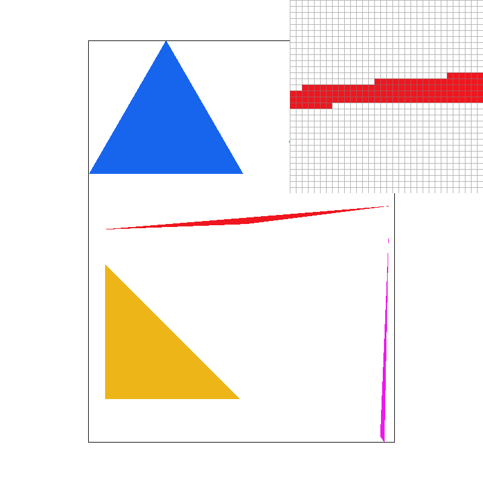
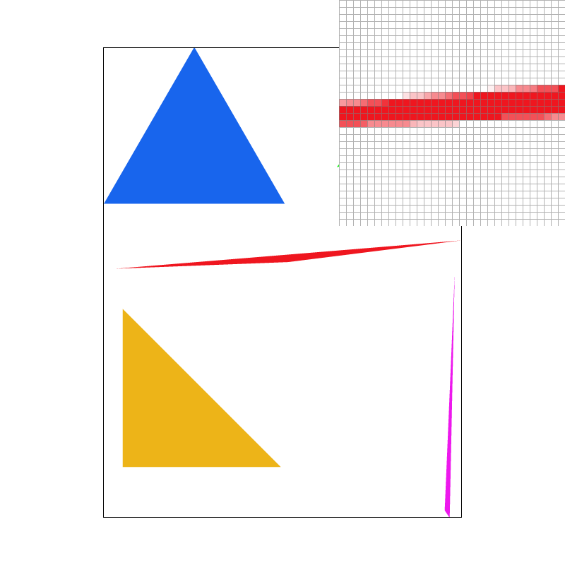
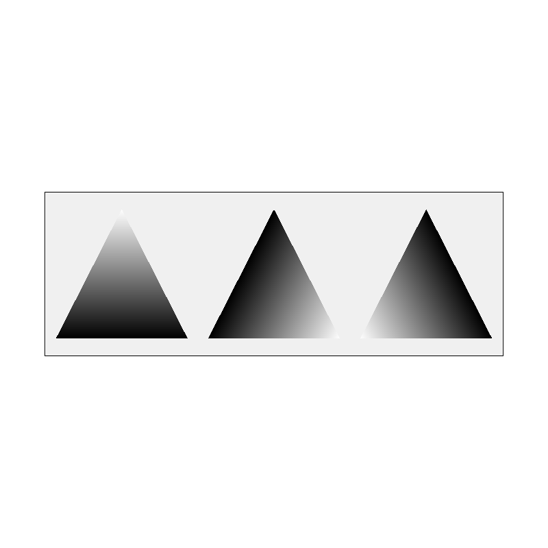
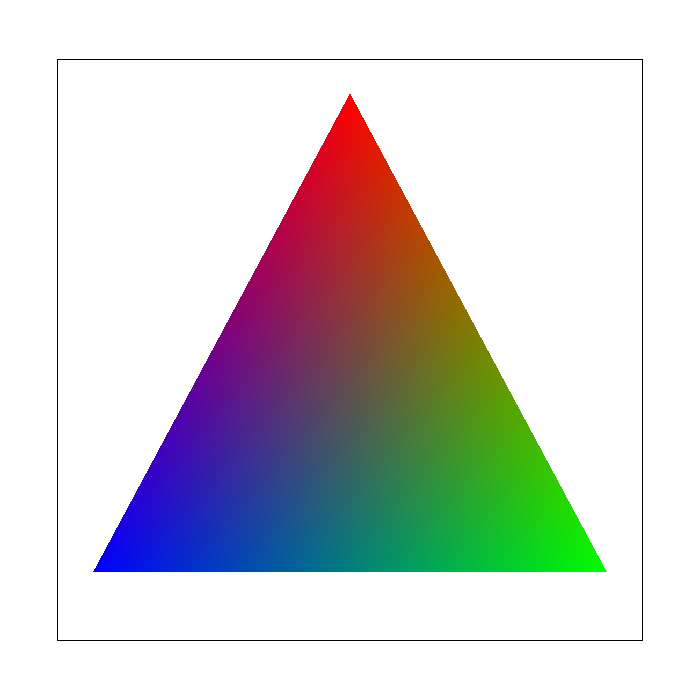
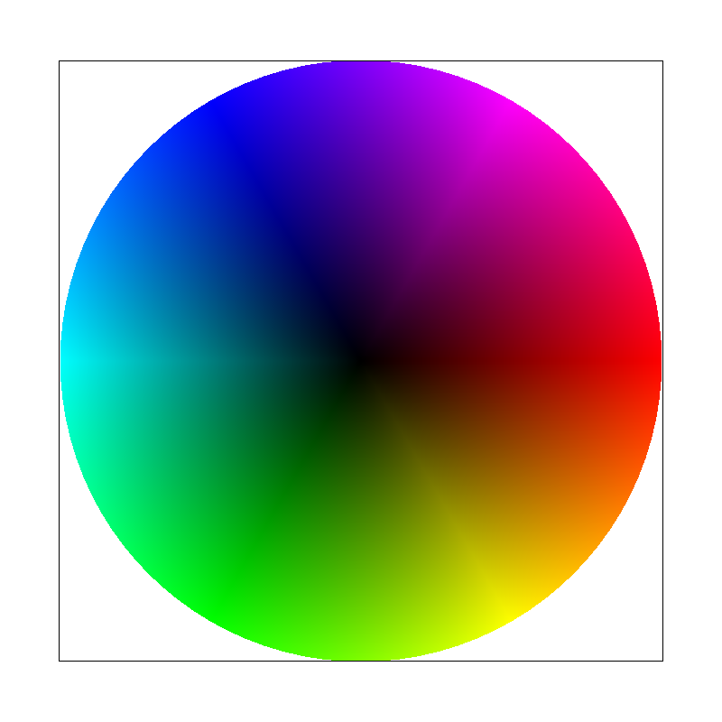
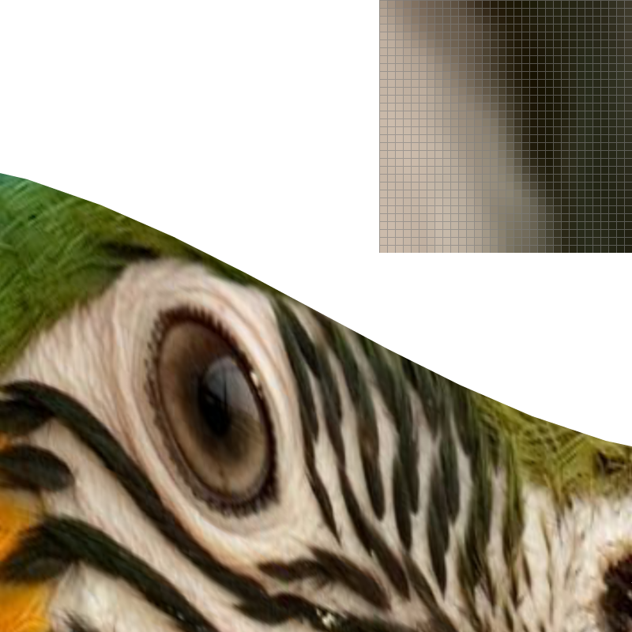
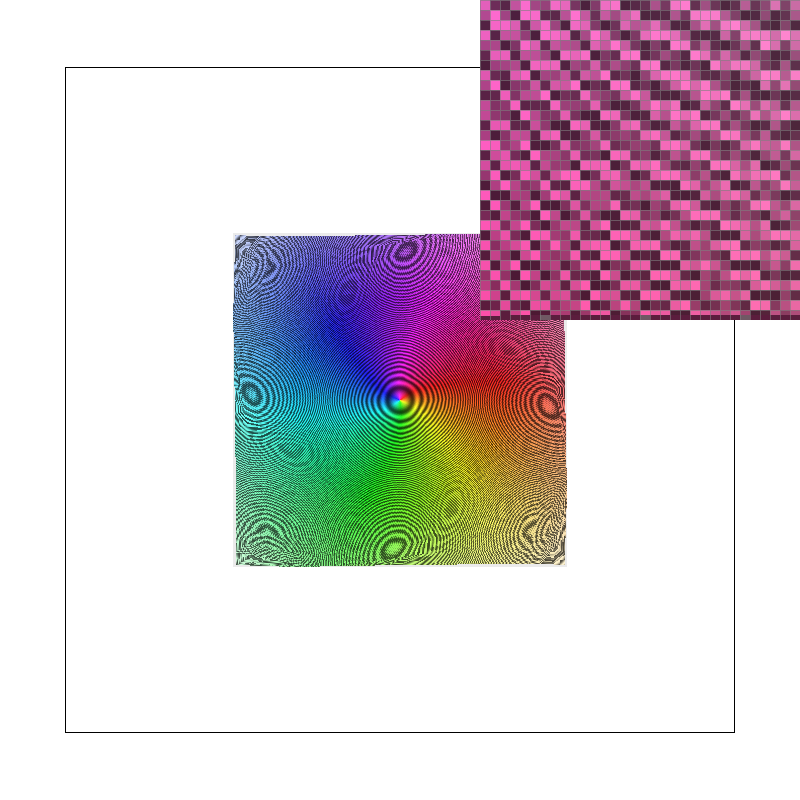

CS184/284A Fall 2026 Homework 1 Write-Up
Link to webpage: cal-cs184-student.github.io/hw1-hanoist-writeup
Link to GitHub repository: github.com/cal-cs184-student/hw1-hanoist
Overview
This homework builds a software rasterizer that reads a simplified SVG format and draws it into an RGB framebuffer. Starting from a renderer that could only plot points and lines, I implemented the whole path from vector geometry to lit pixels: triangle rasterization by edge functions, supersampling for antialiasing, the 2D affine transform stack, barycentric colour interpolation, and finally texture mapping with both pixel sampling (nearest and bilinear) and level sampling (mipmaps, up to trilinear filtering).
The single most useful idea I took away is that the same barycentric machinery pays for itself three times over. Once a point's barycentric coordinates with respect to a triangle are known, they (a) tell you whether the point is inside it, which is the rasterizer, and (b) let you interpolate any per-vertex attribute, which is colour in Task 4 and texture coordinates in Tasks 5 and 6. Because those coordinates are affine in screen \((x, y)\), their gradients are constant over a triangle, which is what made the derivative calculation that mipmapping needs essentially free.
Two other things surprised me. First, the difference between nearest and bilinear sampling is barely visible under minification but dramatic under magnification, because the two methods only disagree about what to do inside a texel — shrinking is a filtering problem that mipmaps solve, not an interpolation problem. Second, the cheap optimizations in Task 1 were worth far more than I expected: a conservative per-row span clip made the degenerate-square stress test about 35× faster while producing a bit-identical image.
S hotkey writes the
framebuffer at whatever size the window currently is, and the default window is
800×600 (viewer.cpp defines DEFAULT_W 800 and
DEFAULT_H 600). To produce a consistent set of square 800×800 images
with exactly specified sample rates, sampling modes, camera zoom and pixel-inspector
positions, I wrote a small offscreen driver that reproduces
DrawRend::redraw() and DrawRend::draw_zoom() exactly but takes
all of those as command-line arguments, and writes PNGs through the same lodepng encoder
the S hotkey uses. I verified it is faithful by rendering the same scene
both ways — through ./draw <svg> nogl 800 800 and through the
driver — and diffing the decoded pixels: zero differing pixels, not merely a
small difference. Every image below is therefore a lossless PNG of the exact framebuffer
the GUI would have blitted, with the pixel inspector composited in the top-right corner
exactly where DrawRend::draw_zoom() puts it.
Task 1: Drawing Single-Color Triangles
How I rasterize a triangle
I orient each of the triangle's three edges and describe it by an edge function. For the directed edge from \(P\) to \(Q\), the function
\[ E_{PQ}(x,y) = (x_{Q} - x_{P})(y - y_{P}) - (y_{Q} - y_{P})(x - x_{P}) \]is zero exactly on the line through \(P\) and \(Q\), and its sign tells you which side of that line a point falls on. It is also just an affine function, so I store it as \(E(x,y) = Ax + By + C\).
Rasterizing then works like this:
- Build one edge function per edge, oriented so that edge \(i\) is the one opposite vertex \(i\): \(E_{0} = E_{P_{1}P_{2}}\), \(E_{1} = E_{P_{2}P_{0}}\), \(E_{2} = E_{P_{0}P_{1}}\).
- Evaluate \(E_{0}\) at \(P_{0}\). That value is twice the signed area of the triangle. If it
is negative the triangle is wound the other way, so I negate all three edge functions
once, up front, instead of testing a per-triangle sign for every sample. A triangle
with zero area is skipped entirely. This is what makes the routine work for both
clockwise and counter-clockwise input, as required by
test6.svg. - Compute the triangle's bounding box, clip it to the framebuffer, and iterate only over pixels inside it.
- For each pixel in that box, test one sample per pixel at the pixel centre — coordinate \((x + 0.5,\; y + 0.5)\) — which is the integer-plus-\((0.5,0.5)\) convention the assignment asks for.
- A sample is covered iff all three edge functions are non-negative there. Testing
>= 0rather than> 0means samples lying exactly on an edge are drawn, so shared edges between adjacent triangles are never dropped and no seam appears between them. - Covered samples are written with
fill_pixel(), following therasterize_pointexample.
This logic lives in one template helper, rasterize_triangle_impl(), shared by
the flat-colour, interpolated-colour and textured triangle routines. They differ only in
what they write per covered sample, so the traversal is written once.
Why this is no worse than checking every sample in the bounding box
The requirement is that the implementation be at least as efficient as the obvious algorithm that loops over the triangle's axis-aligned bounding box and tests every sample in it.
My loop visits a subset of exactly that set. The bounding box is computed as \(\lfloor \min x \rfloor \ldots \lceil \max x \rceil\) in each axis, which is the smallest integer rectangle containing the triangle, and it is clipped to the framebuffer so off-screen triangles cost nothing at all. Inside the loop, each visited sample costs a constant amount of work: three edge-function evaluations and three comparisons. So the total cost is bounded by \(O((\text{bbox width}) \times (\text{bbox height}) \times \text{sample_rate})\), which is precisely the cost of the bounding-box algorithm. Every optimization described below only ever removes samples from that set; none of them adds work outside the box, and none of them changes which samples are considered covered.

basic/test4.svg at the default view, sample rate 1, with the
pixel inspector centred on the thin red triangle. Every edge is a hard staircase: with
one sample per pixel, a pixel is either entirely red or entirely background, so the
gradual taper of the sliver is quantised into visible steps and the very tip breaks up
into disconnected specks.Extra credit: making it fast
I implemented two optimizations on top of the bounding box and measured each one
separately with std::chrono::high_resolution_clock wrapped around the
svg.draw() call, at 800×800, averaged over many frames.
1. Incremental edge functions. Since \(E\) is affine,
\(E(x + \Delta , y) = E(x,y) + A\Delta\). Sub-pixel sample positions are evenly spaced, so
walking from one sample to the next is a single addition of \(A/s\) — no multiplies in
the inner loop at all. The running values never need re-seeding inside the pixel loop
either, because stepping \(i\) past \(s\) lands exactly on the first sub-sample of the next
pixel. I keep the accumulators in double: the values would otherwise drift
across a long scanline, and in double the accumulated error stays far below anything that
could flip an on-edge sample.
2. Conservative per-row span clipping. The bounding box is a poor fit for thin or diagonal triangles — most of the box is empty. For a given pixel row, the set of \(x\) for which an edge is non-negative is a half-line whose boundary moves linearly with \(y\), so the union over the row's \(y\) range is bounded by the zero crossing at the two ends of the row. Intersecting those three union intervals gives a span that is guaranteed to contain every covered sample, and a row whose intersection is empty is skipped entirely. This is deliberately a conservative bound rather than an exact one: the per-sample edge test still decides coverage, so the clip can only cost a little speed, never correctness. The assignment warns that no edge may be left un-rasterized, and this keeps that guarantee intact.
| Implementation (ms per frame, 800×800) | test3 sr=1 | test3 sr=16 | test4 sr=16 | test7 sr=16 | hardcore/02 sr=1 |
|---|---|---|---|---|---|
| Bounding box only, edges re-evaluated per sample | 10.87 | 65.87 | 25.71 | 129.39 | 470.84 |
| + incremental edge functions | 8.44 | 47.20 | 27.74 | 75.14 | 182.98 |
| + per-row span clipping (submitted) | 6.88 | 30.14 | 20.77 | 34.45 | 13.30 |
| Speedup | 1.58× | 2.19× | 1.24× | 3.76× | 35.4× |
Each figure is the mean over many frames after a warm-up frame; repeating the whole table changes the numbers by a few percent but not the ordering.
The pattern matches the theory. test3 (a dragon silhouette made of long
diagonal polygons) and test7 (a fan of thin wedges) are dominated by empty
bounding-box area, so the row clip is what pays. test7 at sample rate 16 is
the clearest case: 16× the samples of the rate-1 image, and yet only 34.4 ms,
because after clipping there is almost nothing left to walk. test4 improves
least, because its triangles are already thick enough that their bounding boxes are
mostly full — and note that for it the incremental step alone is neutral or even
slightly negative, since recomputing an affine function from scratch is nearly as cheap
as stepping it when there is no empty space to skip. The degenerate-square stress test is
the extreme case at 35.4×: those shapes are nearly zero-area slivers whose bounding
boxes are enormous relative to their coverage, which is exactly the situation the span
clip is designed for.
I checked that the optimizations are value-preserving rather than merely
plausible-looking. I built a reference binary that keeps the same double precision but
evaluates every edge function directly with no increments and no row clip, then diffed
its output against the optimized build across test3, test4 at
sample rates 1/4/16, test7, the robot, all four textured scenes and both
hardcore degenerate scenes: every image is bit-identical. The speedup
comes entirely from visiting fewer samples, not from computing different values.
Task 2: Antialiasing by Supersampling
Data structures and algorithm
I replaced the single framebuffer with a supersample buffer: a
std::vector<Color> of length
width * height * sample_rate, where Color holds three floats
rather than bytes so that averaging does not lose precision. With
\(s = \sqrt{\text{sample_rate}}\), the sub-sample at grid position \((i,j)\) of pixel
\((x,y)\) lives at index
(y * width + x) * sample_rate + j * s + iand is tested at the sub-pixel cell centre
\[ (x + \frac{i + 0.5}{s},\;\; y + \frac{j + 0.5}{s}). \]At \(s = 1\) this collapses to \((x + 0.5,\; y + 0.5)\), the Task 1 convention, so the plain case is just the degenerate case of the general one rather than a separate code path.
Four changes to the pipeline were needed:
set_sample_rate()andset_framebuffer_target()both resize the buffer to the new dimensions. The starter code resized towidth * height, which silently under-allocates as soon as more than one sample per pixel is requested; both now multiply bysample_rate.rasterize_triangle()iterates the \(s \times s\) grid per pixel and writes into the sample buffer instead of the framebuffer.fill_pixel()writes the same colour into all sub-samples of a pixel. Points and lines are not antialiased, but they still have to land in the sample buffer; writing every sub-sample makes resolving average back to exactly the colour that was asked for, which is what restores the black canvas border intest4.svgonce supersampling is on.resolve_to_framebuffer()averages each pixel's \(s\) sub-samples and converts the result to the 8-bit framebuffer, clamping to \([0,1]\) so that rounding can neither overflow nor wrap around.
Why supersampling antialiases
Sampling a triangle once per pixel asks a yes/no question and gets a binary answer, so a pixel at the boundary is either fully in or fully out — the staircase in the Task 1 image. Supersampling instead approximates the fractional area of the pixel covered by the triangle: place \(s^{2}\) samples in the pixel, count how many land inside, and average. That average is a box-filter estimate of the pixel's true colour, so a pixel half covered by a red triangle comes out 50% red instead of pure red or pure white, and the edge reads as a smooth ramp. This is exactly equivalent to rasterizing at \(s\times\) resolution and then box-downsampling, which is the mental model I used throughout: the sample buffer is just a temporary higher-resolution framebuffer.
|
 |
|
 |
basic/test4.svg at the same default view and pixel-inspector
position as the Task 1 screenshot, at sample rates 1, 4 and 16.The magnified inspector makes the mechanism visible. At rate 1 the red sliver is drawn as a band of fully saturated pixels with a hard, blocky boundary — each pixel is entirely red or entirely background, and where the triangle is thinner than a pixel the sliver simply disappears for stretches. At rate 4 the boundary pixels have picked up partial coverage and turned pink; five distinct shades are now available (0, ¼, ½, ¾, 1). At rate 16 the ramp is finer still and the sliver's taper reads as a continuous fade, with even the very tip resolved into a sequence of progressively lighter pixels instead of dropping out. Note also that the geometry itself has not moved: the stair-steps in the *path* of the edge are still there, because that is the true shape of the triangle. What supersampling removes is the quantisation of coverage into all-or-nothing pixels, not the triangle's silhouette. That is why rate 16 looks smoother without the edge having shifted by even a pixel.
Task 3: Transforms
I implemented the three affine transforms in transforms.cpp as
\(3\times 3\) homogeneous matrices, so that translation becomes a linear operation and all
three compose with the same matrix multiply:
with \(\theta\) converted from degrees. The displacement lives in the third column so
that \(T \cdot (x,y,1)^{\top } = (x+d_{x},\; y+d_{y},\; 1)^{\top }\). Scale and rotation leave the
bottom-right entry at 1, which keeps the homogeneous coordinate \(w = 1\) and makes the
perspective divide in operator*(Matrix3x3, Vector2D) a no-op for these
transforms. Note that screen space has \(y\) pointing down, so a positive rotation angle
appears clockwise on screen; that matches the SVG specification's rotation direction, and
the SVG parser composes transforms left-to-right, so
translate(a) rotate(b) rotates first and then translates.
My cubeman
I made cubeman wave. The thing I wanted to get right was that this is a hierarchical transform exercise, not a matter of nudging polygons until they look right, so I rebuilt each limb as a group whose origin sits exactly at its joint:
<g transform="translate(-60 -40)"> <!-- shoulder -->
<g transform="rotate(75)"> <!-- swing the whole arm up -->
<g transform="translate(-30 0)"> <!-- upper arm, 0..-60 along x -->
<g transform="scale(.6 .2)"> ...upper arm... </g>
<g transform="translate(-30 0)"> <!-- elbow, at the far end -->
<g transform="rotate(30)"> <!-- bend the forearm -->
<g transform="translate(-30 0)"><g transform="scale(.6 .2)"> ...forearm... </g></g>
</g>
</g>
</g>
</g>
</g>Because the elbow group is nested inside the shoulder group, it inherits the shoulder's
rotation for free and then adds its own 30 degrees on top; the forearm ends up at 105
degrees to the body without any trigonometry in the SVG file. The raised arm is only a
single rotate(75) change from a hanging arm, which is the property that makes
the stack worth having. I applied the same idea to the legs (hip pivot, knee pivot inside
it) for a slight stance, and tilted the head 14 degrees with a translation so cubeman
looks like he is enjoying the wave. I also recoloured him — blue torso, amber head,
red arms, teal legs — because the figure is meant to read as a person at a glance.
my_robot.svg rendered at 800×800. Cubeman waves with his
right arm raised and bent at the elbow, his left arm out to the side, and his feet
planted slightly apart.Task 4: Barycentric coordinates
Pick a triangle with vertices \(P_{0}, P_{1}, P_{2}\). Any point \(P\) can be written as
\[ P = b_{0} P_{0} + b_{1} P_{1} + b_{2} P_{2}, \qquad b_{0} + b_{1} + b_{2} = 1. \]The triple \((b_{0}, b_{1}, b_{2})\) is the point's barycentric coordinates. Each \(b_{i}\) measures the relative area of the sub-triangle opposite vertex \(i\):
\[ b_{0} = \frac{\text{Area}(P, P_{1}, P_{2})}{\text{Area}(P_{0}, P_{1}, P_{2})}, \quad b_{1} = \frac{\text{Area}(P_{0}, P, P_{2})}{\text{Area}(P_{0}, P_{1}, P_{2})}, \quad b_{2} = \frac{\text{Area}(P_{0}, P_{1}, P)}{\text{Area}(P_{0}, P_{1}, P_{2})}. \]So \(b_{0} = 1\) exactly at \(P_{0}\) and falls to 0 along the opposite edge, and all three are non-negative precisely when \(P\) is inside the triangle. That last fact is why the rasterizer can reuse them as its inside test: the three area ratios I need for shading are the same three numbers the edge functions were already computing. Up to a shared constant they are the edge functions normalised by twice the signed triangle area.
The intuitive reading of the numbers is "how much does each vertex influence this point". The figure below makes that literal: in panel \(k\) the \(k\)-th vertex is white and the other two are black, so the grey level plotted at each point is that vertex's weight. Each panel peaks at 1 in its own corner and is 0 along the opposite edge, and you can see that the three panels always sum to a constant.

To shade, I compute one colour per channel by interpolating the vertex colours with those weights,
\[ C(P) = b_{0} C_{0} + b_{1} C_{1} + b_{2} C_{2}, \]which is just three scalar lerps. On the left of the figure below, a single triangle with a red, a green and a blue vertex shows this directly: each channel is largest at its own corner and fades linearly toward the opposite edge.
|
 |
 basic/test7.svg, default view, sample rate 1. |
test7.svg colour wheel.test7.svg is the same idea taken to its conclusion: it is a fan of thin
triangles all sharing a common centre, and each one carries a hue from the HSV wheel at
its centre vertex and at its rim. Because the interpolation is exact and the shared
vertices carry identical colours, the 96 separate triangles join into a single
continuous colour wheel with no visible seams — a useful confirmation that adjacent
triangles agree along their shared edges.
Task 5: "Pixel sampling" for texture mapping
A texture is an image addressed by uv coordinates in \([0,1]^{2}\) rather than by
pixels. Textured triangles therefore carry a \((u,v)\) per vertex, and shading a sample
means: interpolate \((u,v)\) across the triangle with the same barycentric weights used
above, then look up the colour at that position in the texture. The interpolation and the
lookup are independent concerns and I implemented them separately — the
interpolation lives in rasterize_textured_triangle(), and the lookup is
Texture::sample_nearest() / Texture::sample_bilinear(), so that
Task 6 could reuse the lookups unchanged.
The two sampling methods differ only in what they do when the uv coordinate does not land exactly on a texel centre:
- Nearest. Multiply by the texture's dimensions and floor, which selects the texel whose centre is closest. Cost is one multiply and a truncation per channel lookup. The result is piecewise constant: as uv sweeps across a texel the output jumps from one texel's colour to the next, so a magnified texture looks like a mosaic of flat squares.
- Bilinear. A texel of index \(i\) is centred at \(i + 0.5\) in texel space, so I first shift uv into that frame, take the four texels surrounding the sample point, and blend them by the fractional offsets — horizontally first, then vertically. Four lookups and three lerps per sample. The result is continuous in uv, so a magnified texture looks smooth.
Both clamp their indices to the texture edges, which handles the out-of-range lookups that a uv outside \([0,1]\) would otherwise cause.
|
|
|
|
|
 |
svg/texmap/test4.svg (the parrot texture), zoomed in so the
texture is magnified, with the pixel inspector on the fine stripes on the bird's
cheek.To make the difference unambiguous I zoomed in so the texture is magnified rather than minified, because that is where the two methods genuinely disagree. At sample rate 1 the comparison is stark: nearest draws the eye's rim and the diagonal stripes as hard-edged blocks with visible square corners, while bilinear renders the same region as a continuous ramp, and the curves of the eye and beak come out round. The magnified insets show it at the level of individual texels — nearest produces a staircase in steps of exactly one output pixel per texel, bilinear produces a smooth gradient with no steps at all.
Turning supersampling on changes both, but not equally, and the reason is worth spelling out. Raising the sample rate to 16 means each output pixel now takes 16 uv samples and averages them. For nearest sampling this is effectively a box filter over whatever texels those 16 samples happened to land in, so the blockiness softens into bands — but the inset still shows distinctly quantised stripes, because averaging \(n\) nearest-neighbour lookups can only ever produce \(n+1\) distinct values, and within a single output pixel the 16 samples occupy only a small neighbourhood of the texel grid. Bilinear at 16 samples is the smoothest of the four, since each of the 16 lookups is already a continuous function of uv, and averaging them just refines an already smooth signal.
When does the difference matter? A large and visible difference needs the texture to be magnified, so that one texel spans several output pixels. Then nearest exposes the texel grid as literal blocks, and bilinear's interpolation is doing real reconstruction work between known samples. Under minification the two are much closer, because the problem there is not interpolation but undersampling: a single uv lookup per pixel cannot see detail finer than a pixel regardless of how it is interpolated, and bilinear only blends the four texels it does look at. Fixing that requires either more samples or a lower-resolution image to sample from, which is precisely what Task 6 does.
Task 6: "Level sampling" with mipmaps for texture mapping
A mipmap is a precomputed pyramid of the texture at successively halved resolutions. Level sampling uses it to answer: for this output pixel, which resolution of the texture should I be reading? The right answer is the level where one texel is about the size of one output pixel — if I read a much finer level than that, I am point-sampling a signal far above the output's Nyquist limit and get aliasing.
How I compute the level
The rasterizer hands Texture::sample() a SampleParams
containing uv at the sample point and at one pixel to the right and one pixel below. The
difference vectors, scaled from \([0,1]\) uv space into texel space by the full-resolution
dimensions, are the texel footprint of a single pixel:
clamped to the range of levels that exist. A footprint one texel wide gives \(L = 0\) (full resolution) and each doubling of the footprint adds one level, which is exactly the halving in resolution.
Because this matters for both correctness and speed, I want to be precise about where
the derivatives come from. The uv map is affine in \((x,y)\), since it is a barycentric
interpolation of per-vertex uv. Its gradient is therefore constant over the whole
triangle, and I compute it once in rasterize_textured_triangle() from the
barycentric gradients, then add it to the sample's uv to obtain
p_dx_uv and p_dy_uv. This is the same quantity the assignment
describes as the barycentric coordinates at \((x+1,y)\) and \((x,y+1)\), just evaluated
analytically instead of by three extra interpolations per sample, which makes it
exact and free.
The three level modes
- L_ZERO always reads level 0, reducing to Task 5 exactly.
- L_NEAREST rounds \(L\) to the nearest integer level and takes a single sample from it. One lookup, no blending, but the level is a step function so the image can show visible boundaries between regions that chose different levels.
- L_LINEAR samples the two levels bracketing \(L\) and blends them by the
fractional part. Combined with
P_LINEARthis is trilinear filtering: four texel lookups per level, two levels, three lerps to combine them. It is the smoothest of the six combinations and costs the most.
psm and lsm are independent, so all six combinations work.
Tradeoffs between the three techniques
| Technique | Cost per sample | Memory | Antialiasing power |
|---|---|---|---|
Supersampling (sample_rate) |
Linear in sample rate; the whole scene is rasterized \(s^{2}\) times. | \(s^{2}\) colour samples per pixel in the sample buffer. | Fixes all aliasing — triangle edges, texture edges, and intersections between them — because it is a brute-force area estimate. The most general and by far the most expensive. |
Pixel sampling (psm) |
Nearest is 1 lookup; bilinear is 4 lookups plus 3 lerps. Constant per sample. | None beyond the texture itself. | Only smooths within a texel footprint. Removes blockiness under magnification; does essentially nothing for minification aliasing. |
Level sampling (lsm) |
L_ZERO and L_NEAREST are free (one lookup either way); L_LINEAR doubles the lookups and adds a blend. | \(\frac{4}{3}\times\) the texture, fixed, independent of screen resolution. | Directly targets minification aliasing, which is the one thing the other two handle poorly. Cannot help under magnification, where there is no level below 0 to use. |
In practice they are complementary: mipmapping for the shrinking case, bilinear for the enlarging case, and supersampling as the general fallback that also cleans up geometry edges. Supersampling is the only one that is resolution-independent in cost; level sampling is the only one whose memory cost is paid once rather than per frame.
Results on my own texture
For this task I generated my own texture: a 1024×1024 colour zone plate,
a pattern of concentric rings whose local frequency increases linearly with radius. I
deliberately capped its finest detail just below the Nyquist limit of the full-resolution
image, so that the texture is perfectly crisp when read at level 0 and aliases violently
as soon as it is minified. It is the most demanding test I could construct for level
sampling. The image is included with the submission as img/hw1_zoneplate.png,
and the scene below is a copy of svg/texmap/test2.svg with its texture
filename changed to point at it (svg/texmap/zoneplate.svg).
The camera is left at the default view, where the texture is minified about threefold.
|
 |
|
|
|
|
The two rows could hardly be more different. With L_ZERO the image is
covered in large, swirling moiré artefacts that have nothing to do with the actual
pattern — they are the beat frequencies between the rings and the pixel grid, and
the magnified inset is a chaotic checkerboard of light and dark. Note that
L_ZERO + P_LINEAR is barely better than L_ZERO + P_NEAREST:
bilinear interpolation of four neighbouring texels does essentially nothing when the
undersampling is tenfold, which is the point I made at the end of Task 5. Switching to
L_NEAREST removes the moiré almost entirely and the concentric rings
become legible again, at the cost of some overall softness — the level chosen for
this scene discards detail that was never going to survive the minification anyway.
Within each row the pixel-sampling choice makes only a subtle difference, whereas between
the rows the level-sampling choice changes the image completely. That is the opposite of
the Task 5 result, where magnification made pixel sampling the decisive choice and level
sampling irrelevant.
L_LINEAR + P_LINEAR (trilinear filtering) on the same
scene. Blending the two bracketing levels removes the residual level-transition
boundaries that L_NEAREST leaves behind, at the cost of four texel
lookups per level instead of one.